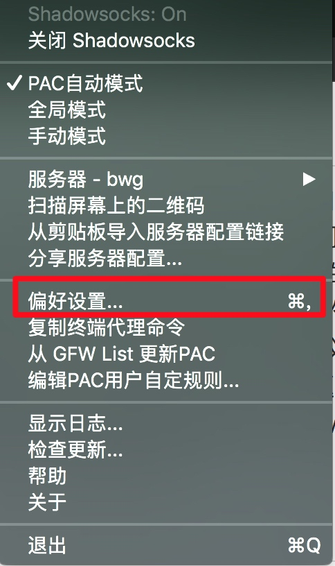
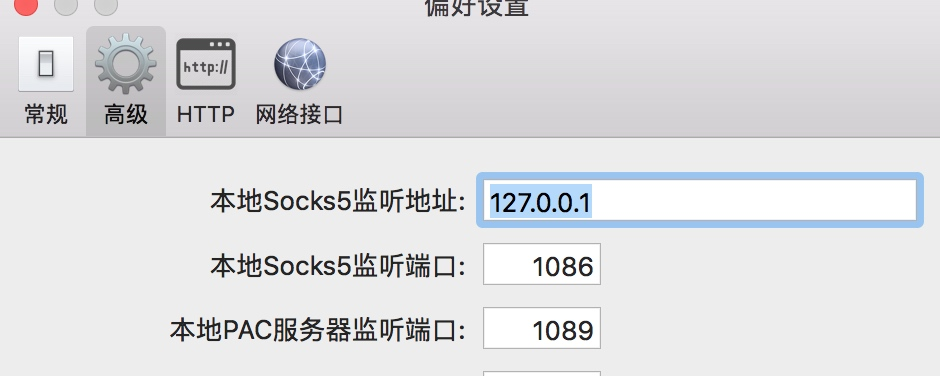
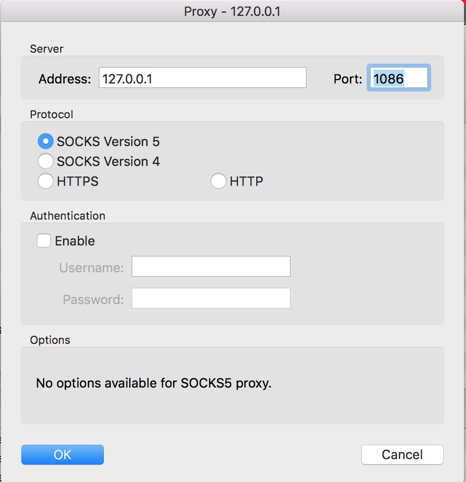
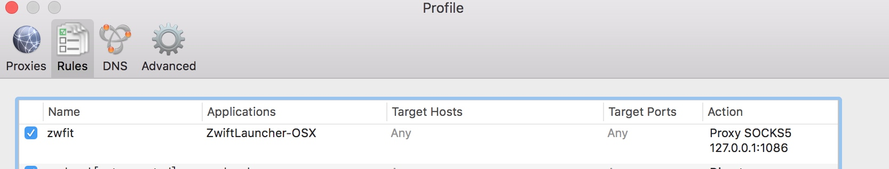
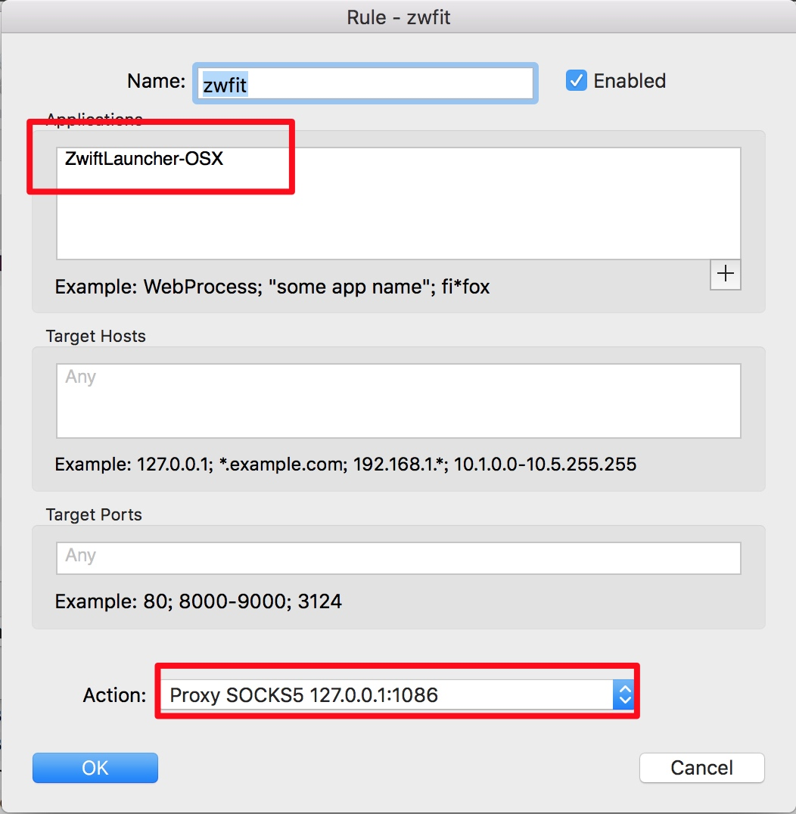
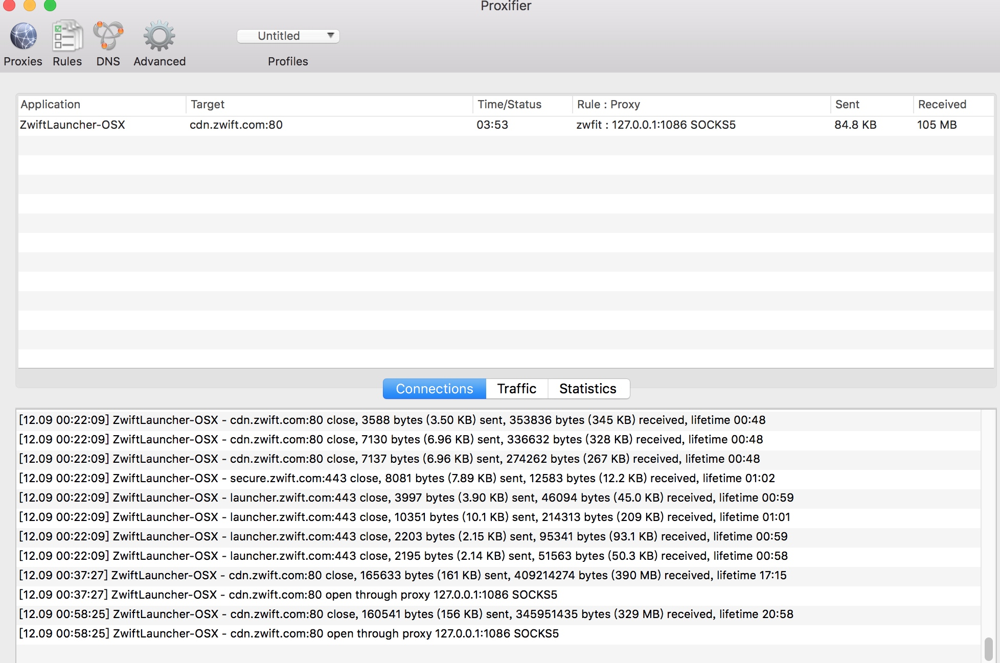
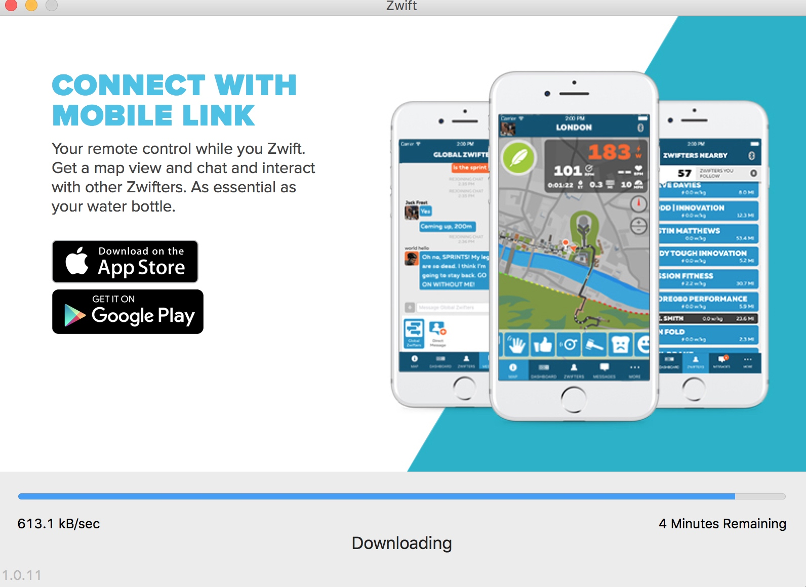
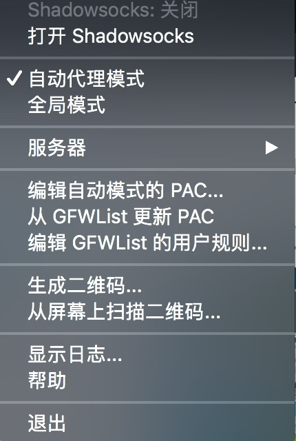

前几天安装了zwift的APP， 然后打开的时候遇到了"zwift can't connect to the update server...Error ZLM01"这样的问题， 因此记录一下解决的过程， 过程参考了Zwift 联网问题解决方案 ZLM01——大x小视频1这片文章， 解决过程也大多相似。然后以下是问题描述以及解决步骤:
问题原因
我下载的zwift版本是1.0，由于zwift启动的时候由于某种原因需要访问google等墙外网站，但是由于GFW的存在， 访问不同应用则会提示上面的错误；那么通过连接例如shadowsocks这样的vpn能不能解决问题呢？ 不能，因为shadowsocks仅能将HTTP协议的请求转发到shadowsocks代理端口，zwift使用的不是http协议，因此仅仅通过shadowsocks无法解决这个问题， 解决这个问题的办法也很简单，就是借助另外一种工具将zwift的请求转发到shadowsocks代理端口, 即 proxifier + shadowsocks的解决方案;
步骤
准备具有socket代理功能的VPN
常见的工具有例如Shadowsocks,OpenVpn等，网上教程有许多，可以选择自己搭建，也可以购买现成的服务；
目标: 能够翻墙访问google, 然后需要了解vpn的sockV5的监听端口以及ip(shadowsocks默认是127.0.0.1:1086, 也可以在shadowsocks的偏好设置中查看)


VPN安装完成之后，设置成自动代理模式即可
准备proxifier
proxifier可以自行去官网下载， 软件收费，自己找破解码破解；
完了之后按照VPN的代理配置添加一个代理:

然后就是设置一个规则:


最后
打开app，在proxifier应该会出现一些应用与外部通信的日志，例如：

如果sent/received正常的话代表连接成功，直观一点就是zwift应用正常了:

我遇到的问题?
shadowsocks的代理地址和端口号找不到

我一开始用的shadowsocks的客户端找不到对应的配置,推荐使用开发者重新开发的一个客户端，那个里面有: ShadowsocksX-NG
能访问google了，proxiefier也按照教程设置了，但还是打不开app
检查一下shadowsocks的模式是否是自动模式
检查一下zwift的请求是否正确代理到了响应的ip+端口，如果没有，那么需要检查规则或者代理的配置
关于自建shadowsocks
推荐使用搬瓦工这个提供商，用了很久了， 比较好用，游戏没有测试过，正常科学上网还是比较靠谱的， 并且自己搭建的话也比较稳定，很多付费的用了一段时间就被查了。
国内地址1
国内地址2
国外地址
关于自建的时候线路的选择也有一些道道，自己晚上搜索接口， 尽量选择直连大陆的那一条。